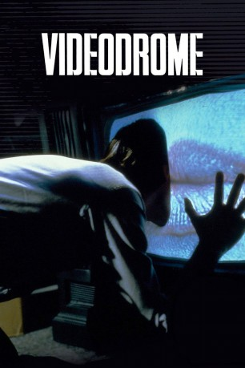

#6171 Videodrome
 
 IMDB-Wertung: 7.3 / 10
IMDB-Wertung: 7.3 / 10  Tomatometer: 80
Tomatometer: 80  Metascore: 0
Metascore: 0 
Max Renn ist Teilhaber einer privaten Fernsehgesellschaft, die vor allem Pornos und Gewaltfilme ausstrahlt. Eines Tages stößt er auf eine neue Horror-Sex-Show: Videodrome. Er versucht, an die Hintermänner der Produktion heranzukommen. Dabei lernt er die Psychologin Nicki kennen, die ihm bei der Suche helfen will. Als die Bänder endlich in seinem Besitz sind, stellt Max entsetzt fest, daß Videodrome bei ihm und allen anderen Zuschauern schreckliche Veränderungen verursacht. In diesem Alptraum fließen Wirklichkeit und das bunte Geflimmer auf dem Fersehschirm zu einer schrecklichen Einheit zusammen...
Jahr: 1983
Dauer: 88 Minuten
FSK: BPjM Restricted
Land: Kanada Studio: Universal PicturesTonspuren:
Untertitel: Deutsch,
Auflösung: 1080p (1920x1048) Größe: 9543 MB
Genre: Thriller, Horror, Sci-Fi
Regisseur:  David Cronenberg
David Cronenberg
Drehbuch: James Schamus
Soundtrack:
Darsteller:
 James Woods als Max Renn
James Woods als Max Renn- Debbie Harry als Nicki Brand
- Julie Khaner als Bridey
 Jayne Eastwood als Woman Caller
Jayne Eastwood als Woman Caller- Sonja Smits als Bianca O'Blivion
- Peter Dvorsky als Harlan
 Leslie Carlson als Barry Convex
Leslie Carlson als Barry Convex- Jack Creley als Brian O'Blivion
- Lynne Gorman als Masha
- Reiner Schwarz als Moses
- David Bolt als Raphael
- Lally Cadeau als Rena King
- Henry Gomez als Brolley
- Harvey Chao als Japanese Salesman
- David Tsubouchi als Japanese Salesman
- Kay Hawtrey als Matron
- Sam Malkin als Sidewalk Derelict
- Bob Church als Newscaster
Datei: X:\FSK18-1900-1999\Videodrome (1983, FSKBPjM Restricted, 1920x1048).mkv seit 09.05.2017
Festplatte: FSK18
 Es gibt insgesamt 108 Filme in der Gruppe 'FSK18-1900-1999'
Es gibt insgesamt 108 Filme in der Gruppe 'FSK18-1900-1999'